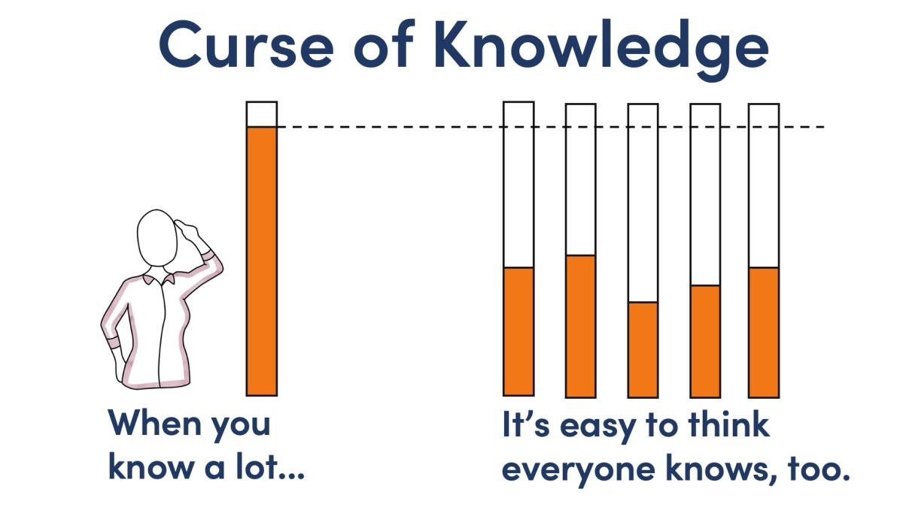

        <section class="slide c act-break" data-n="방금 말씀드린 부분들은 크루 사이드 인데요.
        
        
        그런데 AI를 잘 쓰는 사람이 간과하기 쉬운, 그 반대 사이드에 대한 이해도 함께 필요해요.
        
        AI를 열심히 배운 사람일수록 Curse of Knowledge에 빠지기 쉽습니다. 지식의 저주, 전문성의 저주라고도 하는 이건 뭔가를 많이 알게 되고 나면, 다른 사람들도 다 이정도는 알겠지 라고 착각하게 된다는 건데요. 개구리 올챙이적 생각못한다는 말이 괜히 있는 말이 아닌거죠.
        
        변화를 주도하는 힘을 가지려면 이쪽 사이드, 그러니까 AI를 끌고가는 사이드 그 반대편에서 어떤 감정과 상황이 발생하는지 아는 노력도 필요한데요.
        
        [잠시 멈춤, 톤 낮춤]
        
        [킥] 여러분이 빨라진 만큼, 옆 사람은 자기가 느려졌다고 느낍니다. 여러분의 성장이 누군가에게는 자기 존재에 대한 위협이 될 수 있어요. 그걸 이해하는 사람만이 끌고 갈 수 있습니다.">
                                          <div class="layer-mid" style="background:radial-gradient(ellipse at 50% 60%,rgba(212,165,116,0.08) 0%,transparent 60%);"></div>
                                          <p style="font-size:clamp(13px,1.1vw,15px);text-transform:uppercase;letter-spacing:.25em;color:var(--copper);opacity:.4;">Part 2</p>
                                          <div class="break-line"></div>
                                          <h2 style="font-size: clamp(32px, 3.5vw, 52px); margin-top: 12px; left: 0px; top: 0px;">소리 없이,&nbsp;<span class="em" style="">천천히</span></h2>
                                        
                                          <!-- Curse of Knowledge 이미지 -->
                                          <div style="width: 520px; max-width: 520px; margin: 20px auto 0px; border-radius: 12px; overflow: hidden; background: rgb(255, 255, 255); padding: 8px; box-shadow: rgba(0, 0, 0, 0.4) 0px 4px 24px, rgba(255, 255, 255, 0.06) 0px 0px 0px 1px; height: 371px; top: 30px; left: -110px;">
                                            
                                          </div>
                                        </section>
